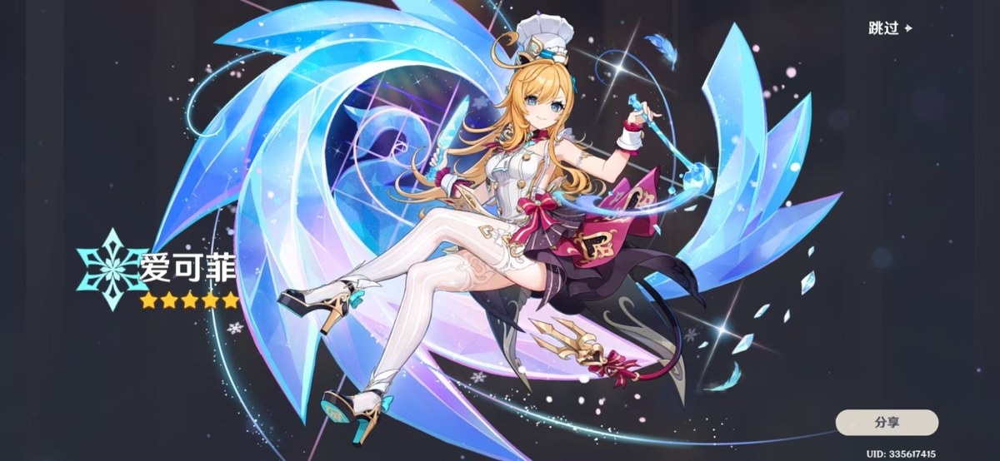
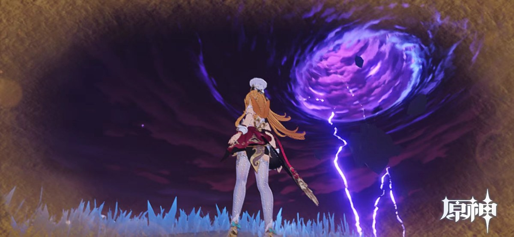

MY TEAM
不带具体数值和术语，只说他们在队伍里干的活。最后一张是秘境里的实战留影——想抄作业的话，思路比配置重要得多。
一手聚怪、一手加伤，队伍一乱就把他切出来救场。看着轻飘飘的，实际上是我阵容里最难被替换的一个。

冰元素的厨师长。范围伤害铺得开，打群怪的时候特别省心，也是我现在最常用的一个输出位置。

站在紫色传送门前的那张留影。第一次自己打通十二层就是在这里，两年过去，这张截图一直没删。
RECORD
随手记的几期，成绩不算漂亮，但能看出队伍在慢慢变稳。
| 期数 | 通关层数 | 获得星数 | 用时 | 复盘结论 |
|---|---|---|---|---|
| 第 12 期 | 12 层 | 24 / 36 | 约 40 分钟 | 上半场打得顺，下半场缺奶，第三节被打穿 |
| 第 15 期 | 12 层 | 30 / 36 | 约 32 分钟 | 换上辅助位后明显稳了，但输出不够，卡在限时 |
| 第 18 期 | 12 层 | 33 / 36 | 约 27 分钟 | 把圣遗物主词条理顺，是最大的收益点 |
| 第 21 期 | 12 层 | 36 / 36 | 约 24 分钟 | 第一次满星。没有新角色，只是把手法练顺了 |